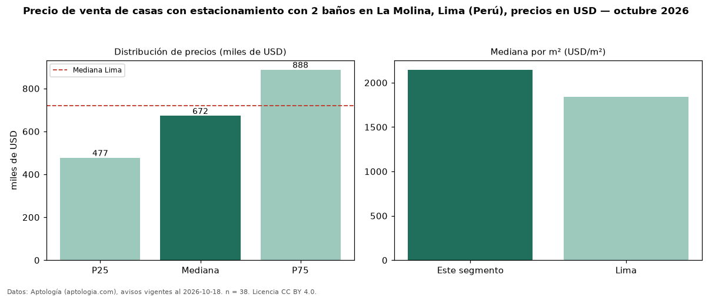

Precio de venta de casas con estacionamiento con 2 baños en La Molina, Lima (Perú), precios en USD — octubre 2026
En La Molina, Lima (Perú), la mediana de precio de venta de casas con estacionamiento con 2 baños es USD 672.500, según 38 avisos vigentes. Eso es 31 % menos que la mediana de las casas con estacionamiento en venta de La Molina (USD 980.000, n = 395); este segmento reúne el 10 % de esos avisos. Por metro cuadrado, la mediana es USD 2.146/m² (n = 36), 15 % por encima de las casas con estacionamiento en venta de La Molina (USD 1.859/m²). El área mediana anunciada es 286 m². El segmento con más oferta es el de 3 o más habitaciones (37 avisos, mediana USD 685.000). La mitad central de los avisos va de USD 476.750 a USD 887.500 (razón 1,9), una dispersión moderada. La mediana de todas las casas en venta de Lima es USD 720.000 (−7 % de diferencia). Datos: Aptología (aptologia.com), CC BY 4.0 — https://www.aptologia.com/pe/venta/lima/la-molina. Archivos: PDF, CSV con las cifras y gráfica PNG.

| Avisos únicos | 38 |
|---|---|
| Percentil 25 | COP 476.750 |
| Mediana | COP 672.500 |
| Percentil 75 | COP 887.500 |
| Mediana por m² | COP 2.146 |
Fuente: avisos vigentes de portales inmobiliarios recopilados por Aptología, deduplicados (mínimo 30 avisos únicos por celda). Precios pedidos, no cerrados. Fecha: 2026-10-18.